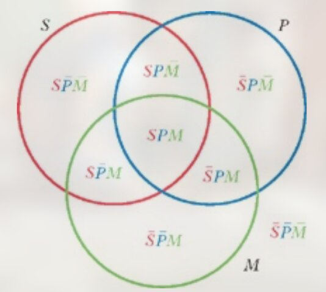

Categorical Syllogisms
- Standard-Form Categorical Syllogisms
- Terms of the Syllogisms: Major, Minor, and Middle
- The mood of the Syllogism
- Venn Diagram Technique for Testing Syllogisms
- Example: Venn Graph for AAA-1
- Diagram the universal premise first
 Put x at border
Put x at border- Technique Summary
- Why Venn Diagram can tell the validity?
- Syllogistic Rules and Syllogistic Fallacies
- Rule 1: Avoid Four Terms
- Rule 2: Distribute the middle term in at least one premise
- Rule 3: Any term distributed in the conclusion must be distributed in the premises.
- Rule 4: Avoid two negative premises
- Rule 5: If either premise is negative, the conclusion must be negative
- Rule 6: From two universal premises no particular conclusion may be drawn
- Exposition of the Fifteen Valid Forms of the Categorical Syllogism
Standard-Form Categorical Syllogisms¶
Categorical Syllogisms is defined as a deductive argument consisting of three categorical propositions that together contain exactly three terms, each of which occurs in exactly two of the constituent propositions.
- Standard-Form
A Categorical Syllogisms is said to be Standard-Form when two things are
true of it:
- its premises and its conclusion are all Standard-Form categorical syllogisms propositions(A,E,I or O).
- those propositions are arranged in a specified standard order.
Terms of the Syllogisms: Major, Minor, and Middle¶
No heros are cowards.
Some soldiers are cowards.
Therefore some soldiers are not heros.
Major Term: hero
Minor Term: soldier
Middle Term: coward
Major Premise: No heros are cowards.
Minor Premise: Some soldiers are cowards.
| Term | Parts |
|---|---|
| Major Term | The predicate term of the conclusion. |
| Minor Term | The subject term of the conclusion. |
| Middle Term | The term that appears in both premises but not in the conclusion |
| Major Premise | The premise containing the major term. |
| Minor Premise | The premise containing the minor term. |
In a standard-form syllogism, the major premise is always stated first, the minor premise second, and the conclusion last.
The mood of the Syllogism¶
mood: is determined by the types (A, E, I, O) of standard-form categorical propositions it contains. For example, the mood of the syllogism below is called EIO.
No heros are cowards. (E)
Some soldiers are cowards. (I)
Therefore some soldiers are not heros. (O)
The figure of the Syllogism¶
The mood of a standard-form syllogism is not enough, by itself, to characterize its logical form. Look at the two syllogisms shown below, they have the same mood AII but the first is not valid. The difference is the relative positions of their middle terms, and this is called figure.
-
Syllogisms can have four -- and only four -- possible different figures.
-
First Figure
- Second Figure
- Third Figure
- Fourth Figure
-
Any standard-form syllogisms is completely described when we specify its mood and its figure.
-
Summary
There are \(4 * 4 *4 = 64\) moods and 4 figures. So, syllogisms have \(64 * 4 = 256\) forms.
The Formal Nature of Syllogistic Argument¶
Deductive Logic: aim to discriminate valid arguments from invalid ones;
Classic Logic: aim to discriminate valid syllogisms from invalid ones;
It is reasonable to assume that the constituent propositions of a syllogism are all contingent—that is, that no one of those propositions is necessarily true, or necessarily false.
Under this assumption, the validity and invalidity of an syllogism depends
entirely on its form.
Examples:
- AAA-1
Any syllogism of the form AAA-1 is valid, regardless of its subject matter. We can substitute S, P and M to Athenians, humans and Greeks.
-
If any syllogism is valid in virtue of its form alone, any other syllogism having that same form will also be valid.
-
If a syllogism is invalid, any other syllogism having that same form will also be invalid.
-
Examples:
The best way to expose its fallacious character is to construct another argument that has exactly the same form but whose invalidity is immediately apparent.
Venn Diagram Technique for Testing Syllogisms¶
The syllogism can be drawn as three overlapping circles. 
{kind=link}
Example: Venn Graph for AAA-1¶
- All M is P and All S is M


- Both

Combine the two premises
This syllogism is valid if and only if the two premises imply or entail the conclusion -- that is, if together they say what is said by the conclusion.
Diagram the universal premise first¶

Had we tried to diagram the particular premise first, before the region \(S\bar PM\) was shaded out along with \(\bar S \bar P M\) in diagramming the universal premise, we would not have known whether to insert an x in \(SPM\) or in \(S \bar P M\) or in both.
Put x at border¶

we may still be puzzled about where to put the x needed in order to diagram the particular premise. That premise is “Some professional athletes are college graduates,” so an x must be inserted somewhere in the overlapping part of the two circles labeled “Professional athletes”and “College graduates.” That overlapping part, however, contains two regions, SPM and SPM. In which of these should we put an x? The premises do not tell us, and if we make an arbitrary decision to place it in one rather than the other, we would be inserting more information into the diagram than the premises warrant—which would spoil the diagram’s use as a test for validity.

Placing an x on the line that divides the overlapping region. This indicate that there is something that belongs in one of them, but does not indicate which one.
Technique Summary¶
- Label the circles of a three-circle Venn diagram with the syllogism's three terms.
- Diagram both premises, diagramming the universal one first if there is one
universal and one particular.
- In diagramming a particular proposition, to put an x on a line if the
premises do not determine on which side of the line it should go.
- Inspect the diagram to see whether the diagram of the premises contains a diagram of the conclusion.
Why Venn Diagram can tell the validity?¶
-
It was shown there that one legitimate test of the validity or invalidity of a syllogism is to establish the validity or invalidity of a different syllogism that has exactly the same form.
-
Example

How does this Venn Diagram tell us that the given syllogism is valid?
We can construct a syllogism of the same form that involves objects
that are immediately present and directly available for our inspection.
Here is the new syllogism:
Syllogistic Rules and Syllogistic Fallacies¶
Rule 1: Avoid Four Terms¶
A valid standard-form categorical syllogism must contain exactly three terms, each of which is used in the same sense throughout the argument.
If more than three terms are involved, the syllogism is invalid. The fallacy thus committed is called the fallacy of four terms.
Rule 2: Distribute the middle term in at least one premise¶
A term is "distributed" in a proposition when the proposition refers to all members of the class designated by that term. If the middle term is not distributed in at least one premise, the connection required by the conclusion cannot be made.
- Example
This syllogism is plainly invalid. Its mistake is that it asserts a connection between anarchists and Russians by relying on the links between each of those classes and the class of revolutionists—but revolutionists is an undistributed term in both of the premises. The first premise does not refer to all revolutionists, and neither does the second. “Revolutionists” is the middle term in this argument, and if the middle term is not distributed in at least one premise of a syllogism, that syllogism cannot be valid.
This is called the fallacy of the undistributed middle.
We want to use middle term to link the minor and major term. Either the
subject or the predicate of the conclusion must be related to the whole of
the class designated by the middle term. If that is not so, it is possible
that each of the terms in the conclusion may be connected to a different part
of the middle term, and not necessarily connected with each other.
Rule 3: Any term distributed in the conclusion must be distributed in the premises.¶
- To refer to all members of a class is to say more about that class than is said when only some of its members are referred to.
- Therefore, when the conclusion of a syllogism distributes a term that was undistributed in the premises, it says more about that term than the premises did.
- But a valid argument is one whose premises logically entail its conclusion, and for that to be true the conclusion must not assert any more than is asserted in the premises.
- A term that is distributed in the conclusion but is not distributed in the premises is therefore a sure mark that the conclusion has gone beyond its premises and has reached too far.
- This is called the fallacy of illicit process.
-
Example
-
Illicit process of the major term
\[ \begin{align*} & \text{All dogs are mammals(Not distributed)} \\ & \text{No cats are dogs} \\ \hline & \therefore \text{No cats are mammals(Distributed)} \end{align*} \] -
Illicit process of the minor term
\[ \begin{align*} & \text{All traditionally religious people are fundamentalists} \\ & \text{All traditionally religious people are opponents of abortion(Not distributed)} \\ \hline & \therefore \text{All opponents of abortion(Distributed) are fundamentalists} \end{align*} \]
Rule 4: Avoid two negative premises¶
- Any negative proposition (E or O) denies class inclusion; it asserts that some or all of one class is excluded from the whole of the other class.
- Two premises asserting such exclusion cannot yield the linkage that the conclusion asserts, and therefore cannot yield a valid argument.
- The mistake is named the fallacy of exclusive premises.
-
Further Reflection
-
S is wholly or partially excluded from all or part of M
- P is wholly or partially excluded from all or part of M
- However, any one of these relations may very well be established no matter how S and P are related.
Rule 5: If either premise is negative, the conclusion must be negative¶
- If the conclusion is affirmative—that is, if it asserts that one of the two classes, S or P , is wholly or partly contained in the other—it can only be inferred from premises that assert the existence of a third class that contains the first and is itself contained in the second.
- However, class inclusion can be stated only by affirmative propositions.
- Therefore, an affirmative conclusion can follow validly only from two affirmative premises.
- The mistake here is called the fallacy of drawing an affirmative conclusion from a negative premise.
- This fallacy is uncommon, since is quite easy to tell
Rule 6: From two universal premises no particular conclusion may be drawn¶
In the Boolean interpretation of categorical propositions, universal propositions (A and E) have no existential import, but particular propositions (I and O) do have such import. Wherever the Boolean interpretation is supposed, as in this book, a rule is needed that precludes passage from premises that have no existential import to a conclusion that does have such import.
- Because of the Boolean Interpretation, it will show a clear fallacy that if the premises of an argument do not assert the existence of anything at all, the conclusion inferred asserts the existence of something.
- This mistake is called existential fallacy.
- Example
Exposition of the Fifteen Valid Forms of the Categorical Syllogism¶
AAA-1 Barbara
EAE-1 Celarent
AII-1 Darii
EIO-1 Ferio
AEE-2 Camestres
EAE-2 Cesare
AOO-2 Baroko
EIO-2 Festino
AII-3 Datisi
IAI-3 Disamis
EIO-3 Ferison
OAO-3 Bokardo
AEE-4 Camenes
IAI-4 Dimaris
EIO-4 Fresison